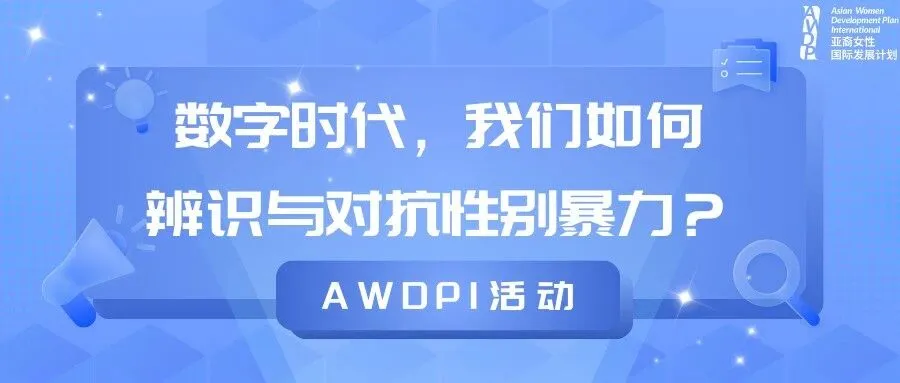
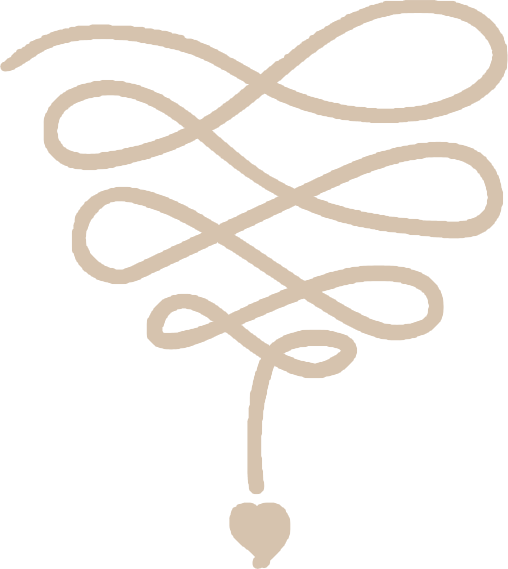

关于这16天，你知道多少？
每年的11月25日至12月10日，是全球“16日反性别暴力行动”（16 Days of Activism Against Gender-Based Violence）。在这段时间里，世界各地的人们团结起来，为终止性别暴力发出声音、采取行动。
2025年度主题聚焦消除数字暴力（UNiTE to End Digital Violence against All Women and Girls）
随着互联网技术的发展，暴力与控制不仅仅发生在现实生活，也延伸至数字空间：骚扰、排斥与偏见，算法让这一切像舞台上的聚光灯，照向女性的数字空间行动轨迹。
然而暴力不因换了场景而不再是暴力；沉默不意味着接受，而是因为太多人无处可说；数字世界不是虚构之地，它同样需要规则、关怀与守护。
“16日反性别暴力行动” 不是结束，而是开始。
在数字空间不断塑造公共叙事的时代，亚裔女性的对话不应被迫停留在屏幕前的碎片化互动。AWDPI 将尝试以“全球联动”的方式展开行动，让原本分散于各个地方的声音走向同一个公共空间，搭建一个让声音得以被看见、被回应的联动场景。
愿我们在彼此看见的那一刻，知道自己并不孤单。愿这十六天成为一个节点，让更多女性在数字世界中不再退缩、沉默或独行。
我们期待，这不止是一场讲座，更是一次彼此照亮、共同编织支持网络的开始。
在数字与现实的交界处，让我们站得更近，走得更稳。
嘉宾介绍

万田田Rainie
AWDPI海外华人女性保护项目心理处负责人兼服务组组长，香港精神健康急救证书持有者
小邱
AWDPI海外华人女性保护项目心理处负责人兼外联组组长，【茉生人】全球华人公益心理咨询师网络创始人
讲座信息
本次讲座将围绕以下两个主题展开：
关于新移民的隐性性别暴力
性别暴力的背后动力——用家庭治疗的角度与系统观分析
讲座时间：12月12日周五 21:00（北京时间）
形式：线上直播
地点：线上腾讯会议直播
会议号：844-508-560 或点击“阅读原文” 即可跳转会议链接
扫码加入AWDPI活动群，
获取会议链接和更多活动资讯

若二维码过期可在公众号后台留言或添加小助手: Avoice-WomenAid加入群聊

我们相信，看见是抵抗的开始，理解是支持的基础。
撰稿｜王晓昀、周欣愉
排版&封面｜池一诺